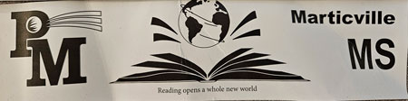

Owen Dommel Bookmark Print Project |
|
| Home Print Project Infographic Project Video Ppoject | |
|
This is the bookmark print assignment. The goal of the project was to design and print a bookmark for the students at Marticville Middle School. The assignment required the school logo and an insirational reading quote. On the right is the design I came up with for the project. |

Results from the printing bookmark assigment |
| ©2023 Owen Dommel | |